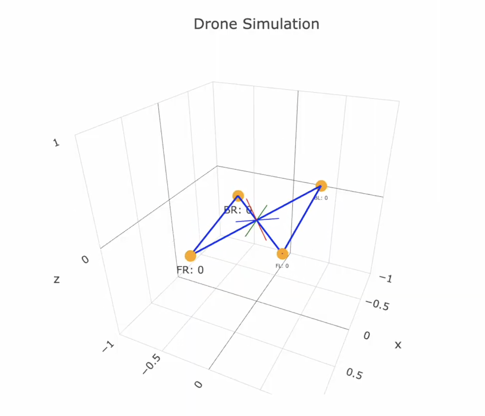
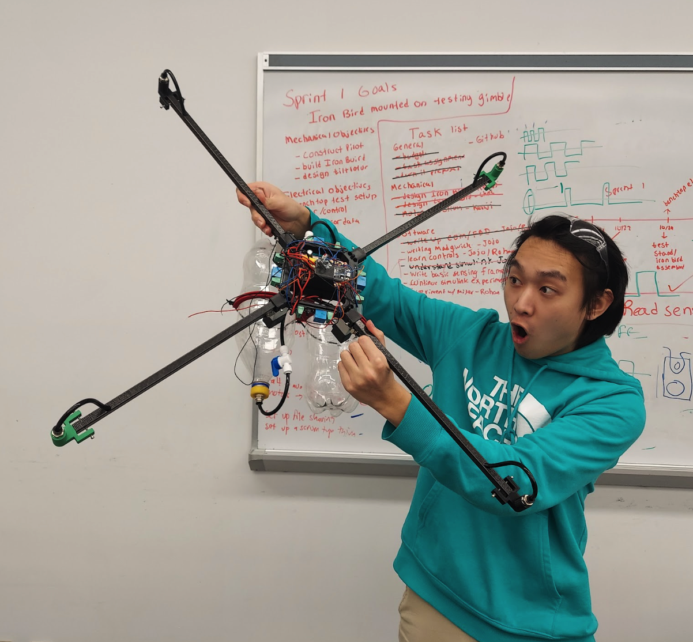

Sprint 1
 In Sprint 1 of our drone development project, our team initially considered
creating a self-balancing drone with a single thruster designed to stabilize
the craft. However, recognizing the complexity of achieving balance with a
single thruster, we simplified our approach by implementing a seesaw mechanism
using two thrusters positioned at opposite ends. We created initial sketches featuring three
thrusters and tested our seesaw concept, successfully demonstrating its
viability. To enhance our prototype’s functionality, we integrated an
Inertial Measurement Unit (IMU) that provided real-time readings for a
single axis, effectively simulating pitch dynamics on a seesaw.
Our testing highlighted the principles of self-balancing, showcasing
our ability to adjust thrust in response to angular displacement,
setting a solid foundation for future developments.
In Sprint 1 of our drone development project, our team initially considered
creating a self-balancing drone with a single thruster designed to stabilize
the craft. However, recognizing the complexity of achieving balance with a
single thruster, we simplified our approach by implementing a seesaw mechanism
using two thrusters positioned at opposite ends. We created initial sketches featuring three
thrusters and tested our seesaw concept, successfully demonstrating its
viability. To enhance our prototype’s functionality, we integrated an
Inertial Measurement Unit (IMU) that provided real-time readings for a
single axis, effectively simulating pitch dynamics on a seesaw.
Our testing highlighted the principles of self-balancing, showcasing
our ability to adjust thrust in response to angular displacement,
setting a solid foundation for future developments.
Sprint 2
 In Sprint 2 of our drone development project, we successfully completed the full mechanical assembly of the gas thruster reaction control system essential for stabilizing the drone using compressed air. This involved integrating key components such as disconnects, fittings, and tubing, alongside a compressor and a regulating valve to effectively manage pressurized air, all culminating in a carefully designed propelling nozzle. By mimicking the principles of rocket engines, our project aims to develop a system that utilizes compressed air for attitude and steering control. Additionally, we created a simulation to test various parameters for the control system, allowing us to validate our design choices before finalizing the mechanical and electrical components. Looking ahead to demo day, we plan to implement four thrusters on a stationary drone to enable it to maintain stability through IMU feedback and microcontroller commands.
Sprint 3
 In Sprint 3 of our drone development project, we finalized our electrical design and successfully implemented it, addressing minor issues in the mechanical design related to the nozzles. We established a testbed for evaluating the drone's balancing capabilities using a hanging setup, recognizing the need to adjust it for comprehensive testing across all axes. Additionally, we focused on refining our control loop by tuning the PID parameters to achieve smoother balancing, transitioning from a thrust application solely based on angle to one that also factors in velocity. This iterative approach aims to enhance the drone's stability and responsiveness as we move forward in the final stages of our development process.